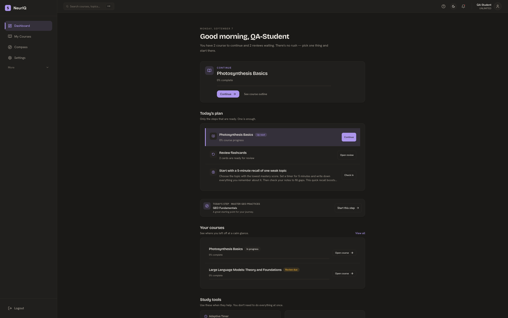
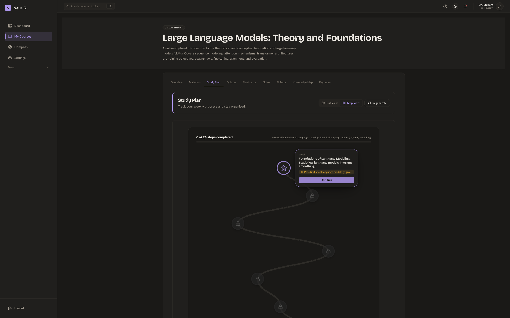
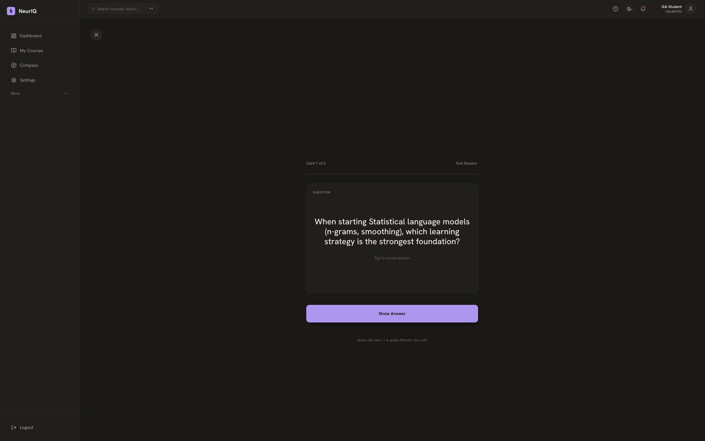
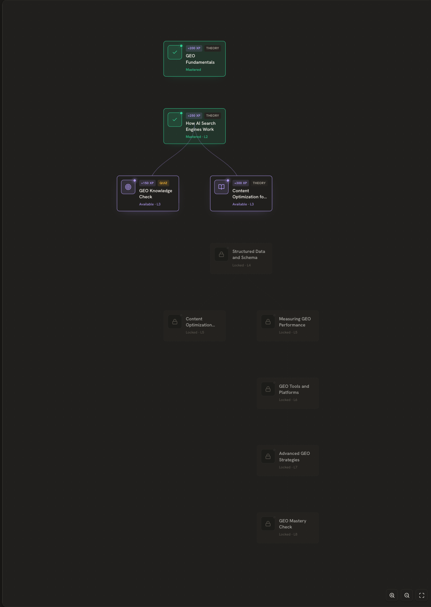

Daily plan
Know where to begin.
Your dashboard brings unfinished courses and due reviews together. Pick one next step without navigating a wall of tools.

A calmer learning workspace
Bring your learning into one place. Find a clear next step, work through a course, and make time to remember what you study.
Daily plan
Your dashboard brings unfinished courses and due reviews together. Pick one next step without navigating a wall of tools.

Course structure
Move through a weekly course plan. Switch between a list and a map to see the steps ahead, with study tools close at hand.

Recall practice
A question, a little space to remember, then the answer. Flashcard review keeps attention on one thing at a time.

Compass
Follow the connections from mastered foundations to available topics and the skills still ahead. Open the image to explore the complete tree.
